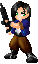

Es decir:
<IMG SRC="lugar donde guardo la imagen">
Supongamos que tengo la imagen cara.gif, que está presente en el mismo directorio donde está la página y que la quiero insertar. La etiqueta apropiada sería:
<IMG SRC="construction.gif">
Y el usuario verá en el browser:
EL ATRIBUTO ALT
Otro atributo importante de la etiqueta <IMG> es "ALT". Este atributo permite complementar la imagen con un texto alternativo, utilizado principalmente para aquellos browsers que no permiten mostrar imágenes, ya sea porque son navegadores que sólo soportan texto (como Lynx), porque el usuario tiene desactivada esta opción o porque se produjo un accidente que impidió la llegada del gráfico a la PC del usuario. El texto aparecerá en el espacio correspondiente a la imagen, y también cuando el usuario pase el mouse por arriba de la imagen, incluso si ésta bajó normalmente a la computadora del navegante.
Ejemplo:
<IMG SRC="construction.gif" ALT= "construction">
El usuario verá (pasar el mouse arriba del texto):
Imágenes como enlaces sin borde
Otra característica interesante de las imágenes insertadas es que permiten ser utilizadas como hipervínculos. Para esto, es necesario crear un enlace y en vez de encerrar el texto dentro la etiqueta <A> hay que encerrar una imagen, pero la desventaja de esto (para algunos) es que muestra un borde alrededor de la imágen, asi que veamos como eliminarlo.
Ejemplo:
<A HREF="http://www.geocities.com/hazeksite"> <img src="HazekStar.gif" border="0" alt="Click aqui para ver lo que puse"> </A>
Resultado:
Tambien podemos enlacer una imagen con nuestra direccion de correo electronico.
Ejemplo:
<A HREF=mailto:hazek_dk@hotmail.com ;img src="correo.gif"
alt="Click aqui para mandarme un mail" >
El usuario verá
Ejemplo de una imagen sin especificar borde
<img scr="ojo.gif">
<border=5 img scr="ojo.gif">
O sino
<border=15 img scr="ojo.gif">
Cada vez que utilizamos una imagen para establecer un hipervínculo, de manera automática el browser agrega un borde a la imagen. Si queremos eliminarlo, deberemos indicarlo con el atributo BORDER=0.
Alineando la imagen
El atributo utilizado para alinear una imagen es ALIGN
Si quiere insertar una imagen a la izquierda de la pantalla
<img align=left src="laguna.gif">

Si prefiero insertarla a la derecha:
<img align=right src="laguna.gif">
Como todavía hay browsers que no soportan la etiqueta <img align=center>, para centrar una imagen hay que recurrir a un pequeño truco: primero centramos un párrafo (tengamos o no texto) y luego insertar la imagen
Para centrar una imagen, entonces:
<P ALIGN=CENTER> <img src="laguna.gif"> </P>
Alinear el texto despues de la imagen
Para esto se utiliza el atributo ALIGN.Este es un parametro opcional usado para alinear la imagen respecto al texto que la acompaña en la misma linea convirtiendola en lo que se llama una imagen flotante. Hay dos tipos basicos de alineacion:
Vertical:
TOP(ARRIBA), MIDDLE(MEDIO) y BOTTOM(ABAJO).El valor que utiliza este atributo por defecto es BOTTOM. Este atributo tambien es utilizado cuando queremos insertar dos imagenes en una misma linea.
Horizontal:
LEFT(IZQUIERDO), RIGHT(DERECHO), TEXTTOP, ABSMIDDLE, BASELINE y ABSBOTTOM
EJEMPLO:
Atributos HEIGHT(altura) y WIDTH (ancho)
Permiten cambiar el tamaño de una imagen. Un ejemplo sin estos atributos
<IMG SRC="zip.gif">
El usuario verá:
<IMG SRC="zip.gif" ALIGN=LEFT WIDTH=75 HEIGTH=40>